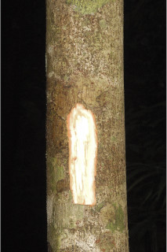
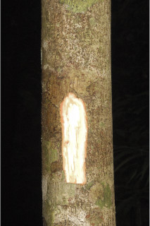

Trees up to 20 m tall.
ಮಧ್ಯಮ ಗಾತ್ರದ ಮರಗಳಾಗಿದ್ದು ದೊಡ್ಡ ಗಾತ್ರದ ಅಗ್ರದಲ್ಲಿನ ಕವಲುಗಳಿಂದ ಎರಡನೇ ಶ್ರೇಣಿಯನ್ನು ತಲುಪುತ್ತವೆ.
വലിയ തലപ്പോടെ രണ്ടാം തലത്തില് എത്തുന്ന ഇടത്തരം വലുപ്പമുള്ള മരങ്ങള്.
மிதமாக உயரமுடைய மரங்கள், பெரிய கிளைகளுடையவை.
Bark grey, fissured; blaze cream.
ತೊಗಟೆ ತೆಳುವಾಗಿದ್ದು ಹೊಳೆಯುವ ಹೊಟ್ಟು ರೂಪದ ಶಲ್ಕೆಗಳಿಂದ ಆವೃತವಾಗಿದ್ದು ನಂತರ ಶಲ್ಕಾರಹಿತವಾಗುತ್ತವೆ.
പരുക്കന് ശല്ക്കിതവും പിന്നീട് അരോമിലവുമായ നരച്ച നിറത്തിലുള്ള കനം കുറഞ്ഞ പുറംതൊലി.
மரத்தின் பட்டை மெல்லியது, சாம்பல் நிறமானது.
Branchlets terete, glabrous.
ಕಿರುಕೊಂಬೆಗಳು ದುಂಡಾಕಾರದಲ್ಲಿರುತ್ತವೆ ಮತ್ತು ಸಂಯುಕ್ತ ಎಲೆಗಳು ತುದಿಯಲ್ಲಿ ಕೇಂದ್ರೀಕೃತವಾಗಿರುತ್ತವೆ.
സാധാരണയായി, ബഹുപത്രങ്ങള് അറ്റത്ത് കേന്ദ്രീകരിച്ചിരിക്കുന്ന, ഉരുണ്ട ഉപശാഖകള്.
சிறிய நுனிக்கிளைகள் குறுக்குவெட்டுத் தோற்றத்தில் வளையமானது, புதிய சிறிய நுனிக்கிளைகள் லெப்பிடோட் செதில்களுடையவை, பிறகு அவை உதிர்ந்துவிடுகின்றன.
Leaves compound, imparipinnate, alternate, spiral, clustered at twig ends, 50 (-90) cm long; rachis pulvinate, 30 cm or more long, often lepidote_scaly; leaflets opposite to subopposite, 4-8 pairs with terminal one, petiolule 0.4 to 1 cm long; lamina 7-18 (-22) x 3-6.5 (-10) cm, oblong-lanceolate, apex acuminate, base asymmetric, margin entire, coriaceous, glabrous; midrib slightly raised above, stout beneath; secondary_nerves slender; tertiary_nerves broadly reticulate.
ಎಲೆಗಳು ಸಂಯುಕ್ತಪರ್ಣಿಗಳಾಗಿದ್ದು ಬೆಸ ಸಂಖ್ಯೆಯ ಗರಿರೂಪದಲ್ಲಿರುತ್ತವೆ ಮತ್ತು ಪರ್ಯಾಯ ಮತ್ತು ಸುತ್ತು ಜೋಡನಾ ವ್ಯವಸ್ಥೆಯಲ್ಲಿದ್ದು 50(-90) ಸೆಂ.ಮೀ ಉದ್ದವಿದ್ದು ಕುಡಿ ಕೊಂಬೆಗಳ ತುದಿಯಲ್ಲಿ ಗುಂಪಾಗಿರುತ್ತವೆ;ತೊಟ್ಟುಗಳು 15 ಸೆಂ.ಮೀ. ಅಥವಾ ಹೆಚ್ಚಿನ ಉದ್ದವಿದ್ದು ಬುಡದಲ್ಲಿ ಉಬ್ಬಿಕೊಂಡಿರುತ್ತವೆ;ಅಕ್ಷ ದಿಂಡು 30ಸೆಂ.ಮೀ. ಅಥವಾ ಇನ್ನೂ ಹೆಚ್ಚಿನ ಉದ್ದವಿದ್ದು ಹಲವು ವೇಳೆ ಹೊಟ್ಟು ರೂಪದ ಶಲ್ಕೆಗಳಿಂದ ಕೂಡಿರುತ್ತದೆ; ಕಿರುಎಲೆಗಳು ಅಭಿಮುಖವಾಗಿರುತ್ತವೆ(ಸಸಿಗಳಲ್ಲಿ ಪರ್ಯಾಯದಿಂದ ಉಪ ಅಭಿಮುಖವಾಗಿರುತ್ತವೆ);ಕಿರುಎಲೆಗಳು 4 ರಿಂದ 8 ಜೋಡಿಗಳಿದ್ದು ಮತ್ತು ಒಂದು ಬೆಸ ಸಂಖ್ಯೆಯದಾಗಿರುತ್ತದೆ;ಕಿರುಪತ್ರಗಳು 7-18(22) X 3-6.5(10) ಸೆಂ.ಮೀ. ಗಾತ್ರದಲ್ಲಿದ್ದು ಚತರಸ್ರ-ಭರ್ಜಿಯ ಆಕಾರದಲ್ಲಿದ್ದು ತುಸುವಾದ ಕ್ರಮೇಣವಾಗಿ ಚೂಪಾಗುವ ತುದಿ ಮತ್ತು ಅಸಮ ಪಾರ್ಶ್ವ ಮತ್ತು ಅಸಮವಾದ ಬುಡ ಹೊಂದಿರುತ್ತವೆ ಅಂಚು ನಯವಾಗಿರುತ್ತದೆ;ಮೇಲ್ಮೈ ತೊಗಲನ್ನೋಲುವ ಮಾದರಿಯದಾಗಿದ್ದು ರೋಮರಹಿತವಾಗಿರುತ್ತದೆ;ಕಿರುತೊಟ್ಟುಗಳು 0.4-1 ಸೆಂ.ಮೀ. ಉದ್ದವಿರುತ್ತವೆ; ಮಧ್ಯನಾಳ ಮೇಲ್ಭಾಗದಲ್ಲಿ ತುಸು ಮೇಲೆದ್ದಿರುತ್ತದೆ ಮತತು ತಳಭಾಗದಲ್ಲಿ ಉತ್ಕ್ರುಷ್ಟವಾಗಿರುತ್ತದೆ;ನಾಳ ವಿನ್ಯಾಸ “ಯೂಕ್ಯಾಂಪ್ಟೋಡ್ರೋಮಸ್” ಮಾದರಿಯಲ್ಲಿರುತ್ತದೆ ಕೆಲವು ವೇಳೆ ಕುಣಿಕೆಗಳು ಪ್ರಮುಖವಾಗಿದ್ದು “ಕ್ಯಾಂಪ್ಟ್ರೋಡ್ರೋಮಸ್”ಮಾದರಿಯವುಗಳಾಗುತ್ತವೆ; ಎರಡನೇ ದರ್ಜೆಯ ನಾಳಗಳು ತೆಳುವಾಗಿದ್ದು ಸಡಿಲವಾದ ಜಾಲಬಂಧ ನಾಳ ವಿನ್ಯಾಸದಲ್ಲಿರುತ್ತವೆ;ಉನ್ನತ ದರ್ಜೆಯ ನಾಳಗಳು ಪ್ರಮುಖವಾಗಿರುವುದಿಲ್ಲ ಆದರೆ ಕವಲುಗೊಂಡಿರುತ್ತವೆ.
ഇലകള്, ഏകാന്തരക്രമത്തില്, സര്പ്പിളമായി, തണ്ടുകളുടെ അറ്റത്ത് കൂട്ടമായടുക്കിയ, 50 സെ.മീ മുതല് 90 സെ.മീ വരെ നീളമുള്ള അസമപിച്ഛക ബഹുപത്രങ്ങളാണ്; അനുപര്ണ്ണങ്ങളില്ല; കീഴറ്റം വീര്ത്ത, ഇലഞെട്ടിന് 15 സെ.മീ വരെയോ കൂടുതലോ നീളം; മിക്കവാറും പരുക്കന് ശല്ക്കിതമായ മുഖ്യാക്ഷത്തിന് 30 സെ.മീയോ കൂടുതലോ നീളം; അറ്റത്തൊരെണ്ണം ഒറ്റയായുള്ള 4 മുതല് 8 വരെ ജോഡി പത്രകങ്ങള് സമ്മുഖമാണ് (ഇളം ചെടികളില് ഏകാന്തരം തൊട്ട് ഉപസമ്മുഖം വരെയാകാം), പത്രകഫലകത്തിന് 7 സെ.മീ മുതല് 18 സെ.മീ (22 സെ.മീ) വരെ നീളവും 3 സെ.മീ മുതല് 6.5 സെ.മീ (10 സെ.മീ) വരെ വീതിയും, ആയത-കുന്താകൃതിയുമാണ്, പത്രാഗ്രം ചെറു ദീര്ഘാഗ്രമാണ്, പത്രാധാരം അസമവുമാണ്, അവിഭജിതമാണ്, ചര്മ്മില പ്രകൃതം, അരോമിലമാണ്; പത്രകവൃന്തത്തിന് 0.4 മുതല് 1 സെ.മീ വരെ നീളം, മുഖ്യസിര മുകളില് ചെറുതായി ഉയര്ന്നതാണ്, കീഴെ ദൃഢവുമാണ്; സിരാവിന്യാസം സാധാരണയായി യൂകാംപ്റ്റോഡ്രോമസ് വിധത്തിലാണ്, ചിലപ്പോള് ചില വളയങ്ങള് പ്രബലമായി മിശ്രിത കാംപ്റ്റോഡ്രാമസ് വിധത്തിലുമാവാം; വിശാല ജാലിതമായ നേര്ത്ത ദ്വിതീയ ഞരമ്പുകള്; മറ്റ് ചെറു ഞരമ്പുകളുടെ വിന്യാസം പ്രബലമല്ല, പക്ഷേ റാമിഫെഡ് വിധത്തിലാണ്.
இலைகள் கூட்டிலைகள், ஒற்றைபடை சிறகுவடிவக்கூட்டிலைகள், (இம்பேரிபின்னேட்) மாற்றுஅடுக்கமானவை, சுழல் போன்று அமைந்தவை; கூட்டமாக மற்றும் நெருக்கமாகமைந்தவை, 50 (-90) செ.மீ. நீளமானது; இலைக்காம்பு 15 செ.மீ. நீளமானது, காம்பின் தளம் உப்பியது; கூட்டிலையின் மத்தியகாம்பு (ராக்கிஸ்) 30 செ.மீ. நீளமானது, பெரும்பாலும் லெப்பிடோட் செதில்களுடையது; சிற்றிலைகள் எதிராகமைந்தவை (சிறிய மரமாக இருக்கும் தருவாயில் மாற்றுஅடுக்கமானவை முதல் கிட்டதட்ட எதிராகமைந்தவை), 4-8 ஜோடிகளுடன் நுனியில் தனி சிற்றிலையுடையது, 7-18 (-22) X 3-6.5 செ.மீ., நீள்சதுரம்-ஈட்டி வடிவானது, அலகின் நுனி அதிக்கூரியது, அலகின் தளம் சமமற்றது, அலகின் விளிம்பு முழுமையானது, கோரியேசியஸ், உரோமங்களற்றது; சிற்றிலைக்காம்பு 0.4-1 செ.மீ. நீளமானது; மையநரம்பு மேற்பரப்பில் அலகின் பரப்பைவிட உயர்ந்தது, கீழ்பரப்பில் தடித்தவை; இரண்டாம் நிலை நரம்புகள் மெலிந்தவை அகன்ற வலைப்பின்னல் போன்றது.
Inflorescence panicles; flowers polygamous.
ಪುಷ್ಪಮಂಜರಿಗಳು ಅಕ್ಷಾಕಂಕುಳಿನಲ್ಲಿನ ಪುನರಾವೃತ್ತಿಯಾಗಿ ಕವಲೊಡೆಯುವ ಮಧ್ಯಾಭಿಸರ ಮಾದರಿಯಲ್ಲಿದ್ದು ಎಲೆಗಳಿಗಿಂತ ಚಿಕ್ಕದಾಗಿ ಅಥವಾ ಸಮನಾಗಿರುತ್ತವೆ; ಹೂಗಳು ಬಹುಕೋನಗಳನ್ನು ಹೊಂದಿರುತ್ತವೆ ಮತ್ತು ಮೊಗ್ಗುಗಳು ಗೋಳಾಕಾರ -ದಲ್ಲಿರುತ್ತವೆ.
മൊട്ടായിരിക്കുമ്പോള് ഗോളാകാരമായ, ബഹുലിംഗികളായ പൂക്കള്, പാനിക്കിള് റസീം പൂങ്കുലകളിലുണ്ടാകുന്നു.
மஞ்சரி பேனிக்கிள்டு ரெசீம் வகை, மலர்கள் ஒர்பாலானவை மற்றும் இருபாலானவை கலந்தவைகள் (பாலிகேமஸ்).
Capsule, subglobose, to 3 cm across, coriaceous, pale reddish, 3-celled; seed 1, orange red.
ಸಂಪುಟ ಫಲಗಳು 3 ಸೆಂ.ಮೀ.ವರೆಗಿನ ಅಡ್ಡಗಳತೆ ಹೊಂದಿದ್ದು ಉಪಗೋಳಾಕಾರ-ದಲ್ಲಿದ್ದು ತೊಗಲನ್ನೋಲುವ ಮೇಲ್ಮೈ ಹೊಂದಿದ್ದು ತೆಳು ಹಳದಿ ಅಥವಾ ಕೆಂಪು ಬಣ್ಣದಲ್ಲಿರುತ್ತವೆ ಹಾಗೂ 3 ಕೋಶಗಳನ್ನೊಳಗೊಂಡಿರುತ್ತವೆ.
3 അറകളുള്ള, 3 സെ.മീ വരെ കുറുകേയുള്ള കായ, ചര്മ്മിലവും, ഇളം മഞ്ഞയോ ചുവപ്പോ നിറത്തിലുള്ള ഉപഗോളാകാര കാപ്സ്യൂള് ആണ്.
வெடிகனி (கேப்சூல்), கோளவடிவானது, 3 செ.மீ. குறுக்களவுடையது, வெளிறிய மஞ்சள் அல்லது சிவப்பு நிறமுடையது, 3-அறைகளுடையது.
 
